YAZILIM YAPISI
NOT : JavaScript kullanabilmek için öncelikle HTML Dili bilmeniz gereklidir!
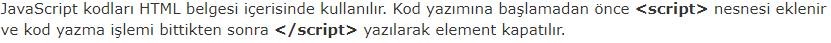 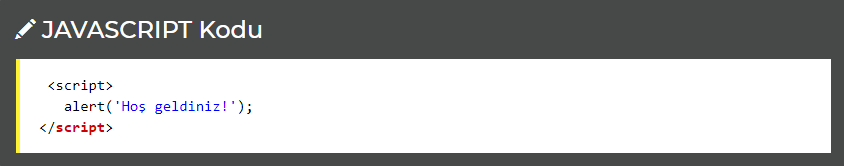JavaScript HTML Belgesinin Neresinde Kullanılır?
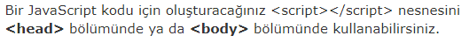NOT : BODY elementi içerisinde kullanmak sayfa yüklenme hızını arttıracaktır.
Aşağıdaki örnek HEAD bölümünde JavaScript kullanılarak yapılmıştır;
JavaScript Kodu
Aşağıdaki örnek ise JavaScript kodunun BODY içerisinde kullanılmasıyla oluşturulmuştur:
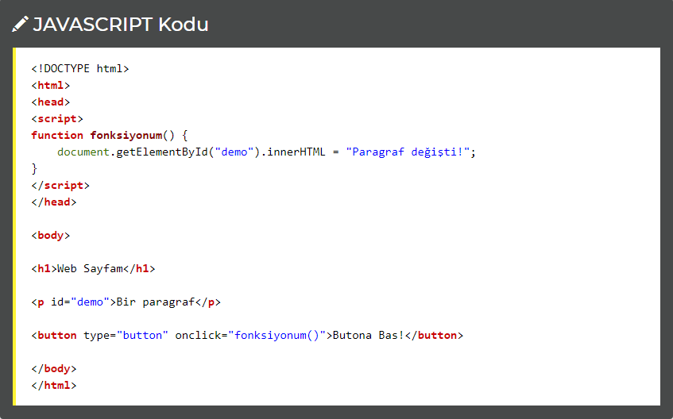JavaScript Kodlarını Dosyadan Kullanma
İsterseniz bir javascript dosyası oluşturarak ve bunu HTML belgenizden çağırarak kullanabilirsiniz. Bu kullanım şekli kaynak kodlarınızın sade olmasını sağlayacaktır.
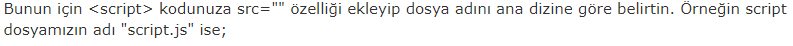JavaScript'i Test Etmek
JavaScript'in yazdırma ya da çıktı verme gibi bir özelliği yoktur. JavaScript, sadece HTML Belgesinde yer alan nesneleri değiştirmek için kullanılır.
getElementById() Fonksiyonu
HTML nesnelerine erişmek için JavaScript'in getElementById(id) kodunu kullanırız.
Yukarıdaki kodda parantez içinde yer alan id, HTML nesnesini tanımlayan bir id özelliğidir. Aşağıdaki örnekte innerHTML ise tanımlanan nesnenin içeriğidir.Aşağıdaki kodu yazarak bir HTML nesnesinin içeriğini değiştirebildik :
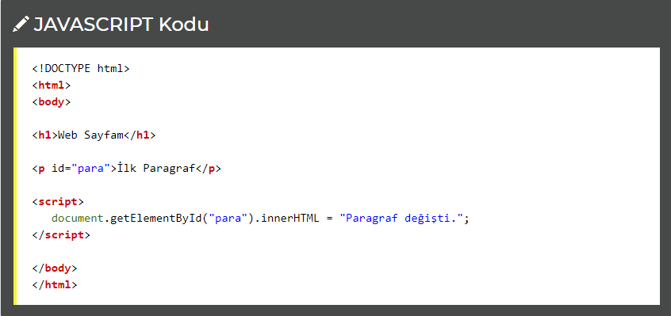Yukarıdaki JavaScript kodu (script içindeki) web tarayıcısı tarafından çalıştırılır.
->document.getElementById("para") bir javascript kodudur ve id="para" olan HTML nesnesini seçmemize yarar.
->innerHTML = "Paragraf değişti" ; kodu ise HTML içeriğini değiştirmeye yarar.
HTML Belgesine Yazdırmak
Sadece test amaçlı olarak HTML belgesine yazı yazdırmak için document.write() kodunu kullanabilirsiniz.
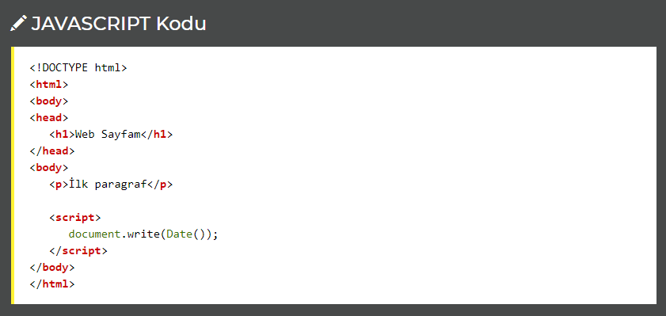Konsola Yazdırmak
Eğer tarayıcınız hata ayıklama özelliğine sahipse, console.log() kodunu kullanarak JavaScript değerlerini tarayıcınızın konsol bölümünde görebilirsiniz.
Konsol bölümüne erişmek ve hata ayıklamayı başlatmak için tarayıcınızda F12'ye basmalısınız.
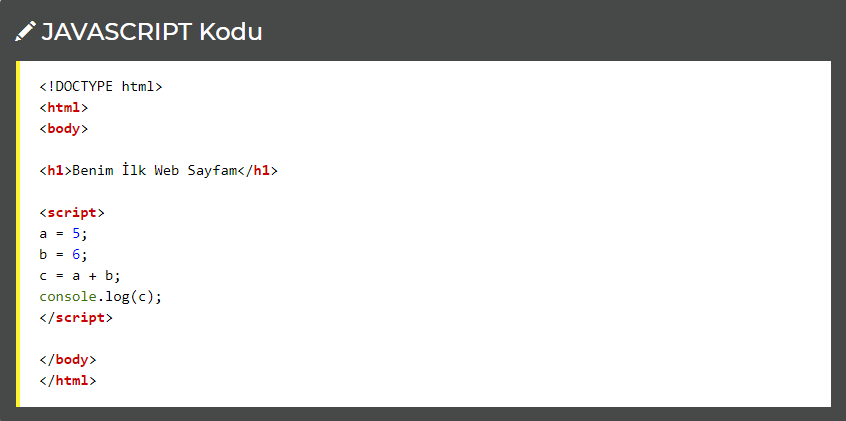NOT: Hata ayıklama, bilgisayar programlama dillerindeki hataları fark etmek ve azaltmak için kullanılır.
JavaScript İfadeleri
JavaScript ile kodlama yaparken JavaScript ifadelerinden faydalanılırız. Bu kodlar yazılırken ifadeler noktalıvirgül (;) ile biter.
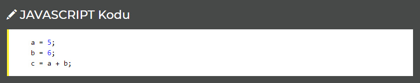JavaScript ifadelerinin tamamı noktalı virgül ile bitmez. IF, FUNCTION, FOR, DO gibi bazı ifadeler, ifade grupları oluşturmaya yarar. Bu tarz ifade grupları oluştururken kıvrımlı parantez kullanılır.
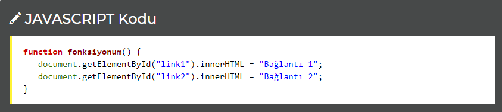Bazen kodlama yaparken hatırlatma ya da bilgilendirme amaçlı yazılar yazmamız gerekebilir. JavaScript buna izin verir. Bunun için tek satırlık ifadelerde // birden fazla satırlı ifadelerde ise /* ... */ kullanılır. Örneği inceleyin;

JavaScript ifadelerini yazarken ifade, değişken ve değerler arası boşluk bırakabilir ya da bunları bitişik yazabiliriz. Aşağıdaki örnekte belirtilen her iki ifade de aynıdır.
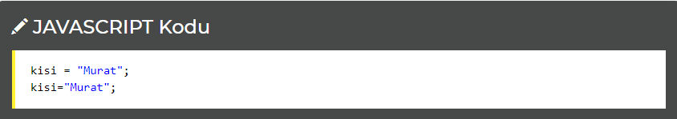